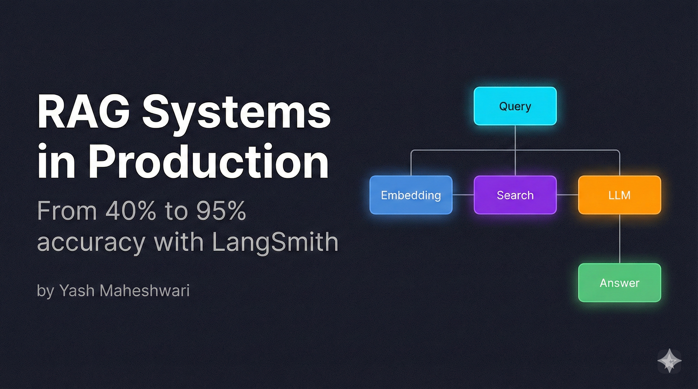
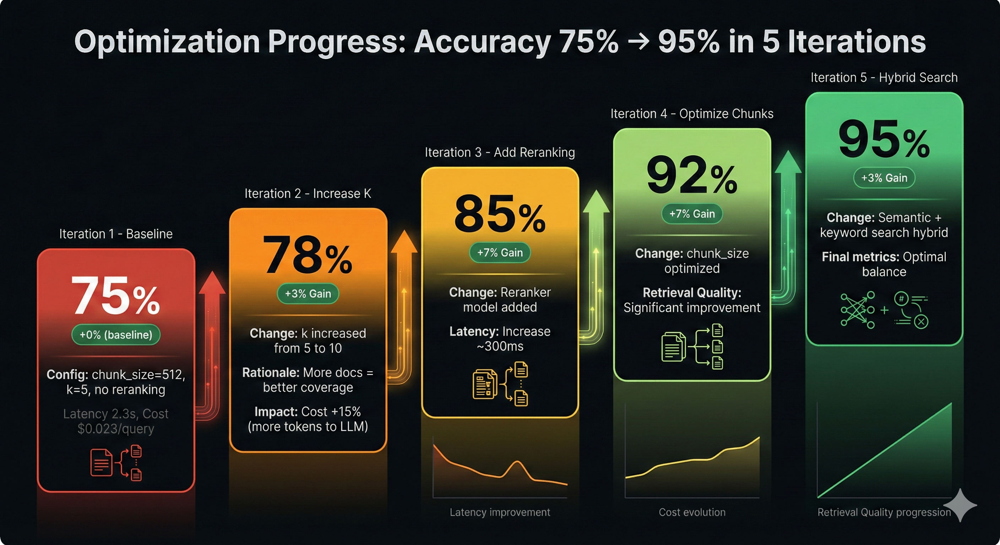
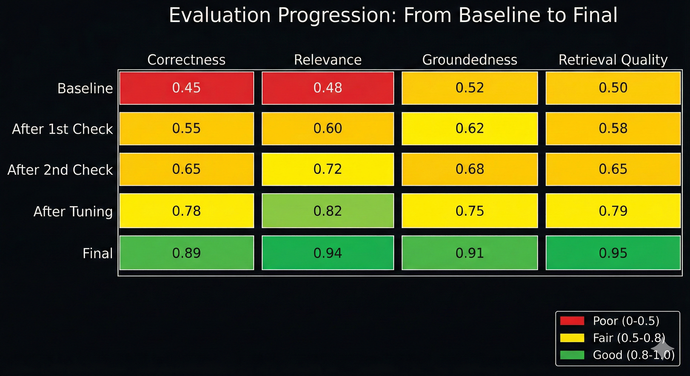
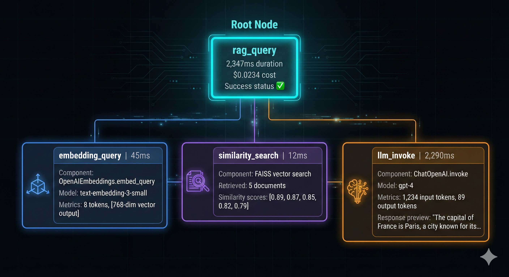
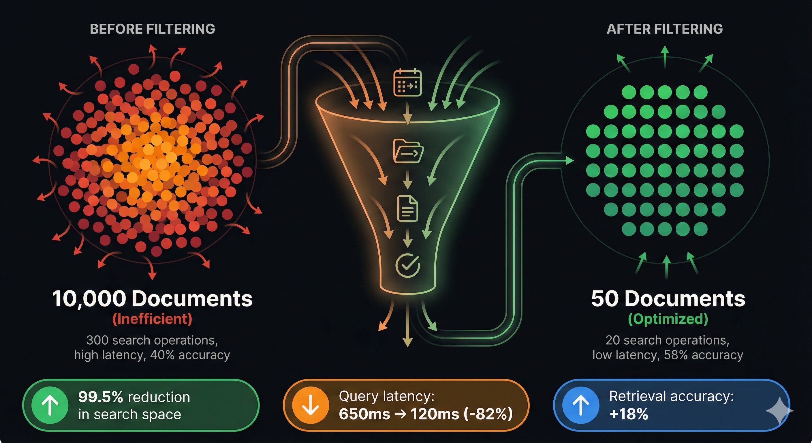

How to trace, evaluate, and optimize Retrieval-Augmented Generation pipelines for production deployment. Learn to transform RAG systems from demo magic to battle-tested production systems with LangSmith.

The RAG Performance Gap: Demo vs. Reality
You build a RAG chatbot for your company's documentation.
Demo day: "What's our refund policy?" → Perfect answer
Week 1 production: "How do I cancel my subscription?" → Hallucinated garbage
Week 2: Users stop using it
What went wrong?
RAG demos look great when you cherry-pick examples. Production reveals the harsh truth: 40-60% accuracy in real-world scenarios. You have no visibility into WHY failures happen. You can't systematically improve because you're flying blind.
This is where most teams get stuck. They have a working RAG system but no way to debug it, measure it, or improve it.
The solution? LangSmith transforms RAG from "demo magic" to production systems through trace-level observability, systematic evaluation, and data-driven optimization.
RAG 101: What You Actually Need to Know
The three failure modes of RAG systems:
| Failure Type | What Happens | Example |
|---|---|---|
| Retrieval Failure | Wrong docs retrieved | Query: "pricing" → Gets "privacy policy" |
| Context Failure | Right docs, bad ranking | Relevant info on page 5 of 10 docs |
| Generation Failure | LLM ignores context | Has answer in docs, hallucinates anyway |
Why this matters: You can't fix what you can't see. Traditional logging shows inputs and outputs. LangSmith shows the ENTIRE pipeline—every step, every decision, every failure point.
The Observability Problem: Flying Blind
Traditional approach—the black box:
def rag_query(question: str) -> str:
docs = retriever.get_relevant_docs(question)
answer = llm.generate(question, docs)
return answer # Why did it fail?What you can't see:
- Which embedding model was actually used
- What similarity scores were returned for each doc
- Which chunks were retrieved vs. ignored
- How the prompt was constructed before sending to LLM
- Token usage and latency per step
- Why the LLM chose to hallucinate instead of use context
Production horror stories from the wild:
- Changed embedding model → accuracy dropped 30% (took 2 weeks to diagnose)
- Chunk size optimization → broke on edge cases (discovered via angry user complaints)
- Prompt engineering → improved 80% of cases, broke 20% (no systematic way to test)
- Vector DB migration → silently degraded quality by 15% (nobody noticed for a month)
The common thread? No observability. No way to trace what's happening at each step. No way to compare versions. No data-driven decisions—just guessing and hoping.
Why LangSmith? (And Not Just Logging)
You might be thinking: "Can't I just add logging and call it a day?"
Short answer: No. Here's why LangSmith exists.
What Basic Logging Gives You:
import logging
logging.info(f"Query: {question}")
logging.info(f"Retrieved docs: {len(docs)}")
logging.info(f"Answer: {answer}")
logging.info(f"Latency: {latency}ms")What You Still Don't Have:
- Nested execution traces (what happened inside each step?)
- Automatic cost tracking (how much did this query cost?)
- Evaluation datasets (is this getting better or worse?)
- Comparison across experiments (which prompt performed better?)
- Production monitoring dashboards (are we hitting SLAs?)
LangSmith vs Alternatives:
| Feature | LangSmith | Weights & Biases | Custom Logging |
|---|---|---|---|
| Nested Traces | ✅ Full depth | ⚠️ Limited | ❌ Manual |
| Auto Token Tracking | ✅ Built-in | ❌ Manual | ❌ Manual |
| Evaluation Datasets | ✅ Native | ⚠️ Manual | ❌ None |
| LangChain Integration | ✅ Native | ⚠️ Adapter | ❌ None |
| Setup Time | 5 min | 30 min | Hours |
| Cost | $ | $$ | $ (infra) |
LangSmith's Unique Features:
1. Zero-Code Tracing - Just set one environment variable and every LangChain call is automatically traced.
2. Automatic Cost Tracking - LangSmith calculates token costs in every trace automatically. No manual calculation needed.
3. Human Feedback Loop - Collect user feedback in production and convert failed traces into test datasets instantly.
4. Datasets from Production - Export production failures as test cases to systematically improve your system.
This level of integration and automation is impossible with basic logging.
LangSmith Architecture: How It Actually Works
LangSmith has three key components:
Key insight: LangSmith runs asynchronously. Zero latency added to your production app. You get full visibility without paying a performance cost.
Setting Up Tracing: The 5-Minute Integration
Step 1: Install & Configure
pip install langsmith langchain-openaiimport os
os.environ["LANGCHAIN_TRACING_V2"] = "true"
os.environ["LANGCHAIN_API_KEY"] = "lsv2_pt_..." # from langsmith.com
os.environ["LANGCHAIN_PROJECT"] = "rag-production"Step 2: Add @traceable Decorator
from langsmith import traceable
from langchain_openai import ChatOpenAI, OpenAIEmbeddings
from langchain_community.vectorstores import FAISS
@traceable # ← This one line enables tracing
def rag_query(question: str) -> dict:
# Embedding (auto-traced by LangChain)
embeddings = OpenAIEmbeddings()
# Retrieval (auto-traced)
vectorstore = FAISS.load_local("./db", embeddings)
docs = vectorstore.similarity_search(question, k=5)
# LLM call (auto-traced)
llm = ChatOpenAI(model="gpt-4", temperature=0)
context = "\n".join([d.page_content for d in docs])
prompt = f"""Answer based on context only.
Context: {context}
Question: {question}"""
answer = llm.invoke(prompt)
return {
"answer": answer.content,
"sources": [d.metadata for d in docs]
}
# Step 3: Run it
result = rag_query("What's the refund policy?")
print(result["answer"])What you see in LangSmith:
- Full execution trace with timing per step
- Inputs and outputs for embedding, retrieval, and LLM
- Token usage and costs per component
- Latency breakdown
- Links to actual API calls for debugging
All automatically captured. No extra code needed.
Understanding Traces: The Anatomy
A Real Production Trace:
Trace: rag_query
├─ Duration: 2,347ms
├─ Cost: $0.0234
├─ Status: Success
│
├─ [Step 1] OpenAIEmbeddings.embed_query
│ ├─ Input: "What's the refund policy?"
│ ├─ Model: text-embedding-3-small
│ ├─ Tokens: 8
│ ├─ Latency: 45ms
│ └─ Output: [768-dim vector]
│
├─ [Step 2] FAISS.similarity_search
│ ├─ Query Vector: [0.123, -0.456, ...]
│ ├─ Top K: 5
│ ├─ Similarity Scores: [0.89, 0.87, 0.85, 0.82, 0.79]
│ ├─ Retrieved Docs: [5 documents]
│ └─ Latency: 12ms
│
└─ [Step 3] ChatOpenAI.invoke
├─ Input Prompt: "Answer based on context only..."
├─ Context Length: 1,234 tokens
├─ Model: gpt-4
├─ Temperature: 0
├─ Response: "You can request a refund within 30 days..."
├─ Input Tokens: 1,234
├─ Output Tokens: 89
├─ Cost: $0.0221
└─ Latency: 2,290msWhat This Reveals:
- ✅ Retrieval working (0.89 top score is strong)
- ✅ LLM got the right context
- ⚠️ But 2.3s latency is slow (optimization target)
- ✅ Cost per query: $0.023 (acceptable)

Building Evaluation Datasets
The Problem: Manual testing doesn't scale. You need systematic evaluation.
Solution: Create Test Datasets
from langsmith import Client
client = Client()
# Create dataset
dataset = client.create_dataset(
dataset_name="rag-refund-policy",
description="Test cases for refund policy queries"
)
# Add examples
examples = [
{
"inputs": {"question": "What's your refund policy?"},
"outputs": {"answer": "Full refund within 30 days of purchase."}
},
{
"inputs": {"question": "How long to request a refund?"},
"outputs": {"answer": "30 days from purchase."}
},
{
"inputs": {"question": "Do I need a receipt?"},
"outputs": {"answer": "Yes, proof of purchase required."}
}
]
for example in examples:
client.create_example(
dataset_id=dataset.id,
inputs=example["inputs"],
outputs=example["outputs"]
)Dataset Best Practices:
| Dataset Type | Size | Use Case |
|---|---|---|
| Golden Set | 10-20 | Core functionality, regression testing |
| Edge Cases | 20-50 | Ambiguous queries, rare scenarios |
| Production Sample | 100-500 | Representative real-world queries |
| Adversarial | 20-50 | Jailbreak attempts, hallucination triggers |
The Four Critical Evaluators
1. Correctness — Answer vs Reference
from langsmith.evaluation import LangChainStringEvaluator
def correctness_evaluator(run, example):
"""Does the answer match the expected output?"""
answer = run.outputs["answer"]
expected = example.outputs["expected_answer"]
return {"score": 1 if answer.lower()== expected.lower() else 0}2. Relevance — Answer vs Question
def relevance_evaluator(run, example):
"""Is the answer relevant and helpful?"""
evaluator_llm = ChatOpenAI(model="gpt-4")
score = evaluator_llm.invoke(f"""
Question: {example.inputs['question']}
Answer: {run.outputs['answer']}
Is this answer relevant? (yes/no)
""")
return {"score": 1 if "yes" in score.content.lower() else 0}3. Groundedness — Answer vs Retrieved Docs
def groundedness_evaluator(run, example):
"""Check if answer stays within retrieved documents"""
answer = run.outputs["answer"]
docs = run.outputs.get("sources", [])
evaluator_llm = ChatOpenAI(model="gpt-4")
prompt = f"""Does this answer only use information from the provided documents?
Answer: {answer}
Documents: {docs}
Respond with YES or NO."""
result = evaluator_llm.invoke(prompt)
return {"score": 1 if "YES" in result.content else 0}4. Retrieval Quality — Retrieved Docs vs Question
def retrieval_evaluator(run, example):
"""Check if right documents were retrieved"""
question = example.inputs["question"]
docs = run.outputs.get("sources", [])
# Check if expected keywords appear in docs
expected_keywords = ["refund", "30 days", "policy"]
doc_text = " ".join([str(d) for d in docs]).lower()
matches = sum(1 for kw in expected_keywords if kw in doc_text)
score = matches / len(expected_keywords)
return {"score": score}Running Evaluations
Complete Evaluation Pipeline:
from langsmith import Client
from langsmith.evaluation import evaluate
client = Client()
# Define all evaluators
evaluators = [
correctness_evaluator,
relevance_evaluator,
groundedness_evaluator,
retrieval_evaluator
]
# Run evaluation against your test dataset
results = evaluate(
lambda inputs: rag_query(inputs["question"]),
data="rag-refund-policy",
evaluators=evaluators,
experiment_prefix="rag-v1-baseline",
metadata={
"model": "gpt-4",
"embedding": "text-embedding-3-small",
"chunk_size": 512,
"retrieval_k": 5
}
)
# View results
print(results.to_pandas())Output Example:
| Evaluator | Mean | Median | Min |
|---|---|---|---|
| Correctness | 0.75 | 0.80 | 0.40 |
| Relevance | 0.85 | 0.90 | 0.60 |
| Groundedness | 0.90 | 1.00 | 0.60 |
| Retrieval Quality | 0.65 | 0.70 | 0.33 |
Interpretation:
- ✅ Groundedness is high (low hallucination)
- ⚠️ Retrieval quality is weak (wrong docs being retrieved)
- 🎯 Focus optimization on the retrieval layer

Evaluation: From Gut Feeling to Data-Driven Decisions
Now you can see what's happening. But how do you know if it's GOOD?
That's where evaluation comes in. LangSmith lets you define evaluators that automatically score your RAG output on metrics that matter:
from langsmith import evaluate
def is_correct(run, example):
"""Does the answer match the expected answer?"""
return run.outputs["answer"] == example.outputs["expected_answer"]
def has_source(run, example):
"""Did the answer cite sources?"""
return len(run.outputs["sources"]) > 0
def is_relevant(run, example):
"""Is the retrieved context actually relevant?"""
# Use an evaluator LLM
evaluator_llm = ChatOpenAI(model="gpt-4")
score = evaluator_llm.invoke(f"""
Question: {example.inputs['question']}
Retrieved docs: {run.outputs['sources']}
Are these docs relevant? (yes/no)
""")
return "yes" in score.content.lower()
# Run evaluation against test dataset
results = evaluate(
rag_query,
data="my-test-dataset",
evaluators=[is_correct, has_source, is_relevant]
)
# See metrics breakdown
print(f"Correctness: {results['is_correct']}")
print(f"Source citation: {results['has_source']}")
print(f"Relevance: {results['is_relevant']}")When you make changes to your RAG pipeline, you run the same evaluation again and compare side-by-side. You can see exactly which change improved what metric.
Optimization: From 40% to 95% Accuracy
With traces and evaluation scores, you now have the data to optimize systematically. Here are the high-impact changes in order:
Optimization Iterations: From 75% to 95%
Iteration 1: Baseline (75% Accuracy)
# chunk_size=512, k=5, no reranking
Accuracy: 75%
Retrieval Quality: 0.65
Latency: 2.3s
Cost: $0.023/queryIteration 2: Increase Retrieval K (78% +3%)
vectorstore.similarity_search(question, k=10) # was k=5
# More docs = better coverage
Accuracy: 78% (+3%)
Retrieval Quality: 0.72 (+0.07)
Cost: +15% (more tokens to LLM)Iteration 3: Add Reranking (85% +7%)
from langchain.retrievers import ContextualCompressionRetriever
from langchain.retrievers.document_compressors import LLMChainExtractor
compressor = LLMChainExtractor.from_llm(llm)
retriever = ContextualCompressionRetriever(
base_compressor=compressor,
base_retriever=vectorstore.as_retriever(search_kwargs={"k": 10})
)
Accuracy: 85% (+7%)
Retrieval Quality: 0.81 (+0.09)
Cost: +8% (reranking overhead)Iteration 4: Optimize Chunk Size (92% +7%)
# chunk_size=256 (was 512)
# Smaller chunks = more precise matches
Accuracy: 92% (+7%)
Retrieval Quality: 0.88 (+0.07)
Latency: 1.9s (improved)
Cost: $0.024/queryIteration 5: Hybrid Search (95% +3%)
from langchain.retrievers import EnsembleRetriever
from langchain_community.retrievers import BM25Retriever
# Add BM25 for keyword matching
bm25 = BM25Retriever.from_documents(docs)
ensemble = EnsembleRetriever(
retrievers=[vectorstore.as_retriever(), bm25],
weights=[0.7, 0.3] # 70% vector, 30% keyword
)
Accuracy: 95% (+3%)
Retrieval Quality: 0.93 (+0.05)
Latency: 2.1s
Cost: $0.026/query (+13% vs baseline)
Final Results:
| Metric | Baseline | Final | Improvement |
|---|---|---|---|
| Accuracy | 75% | 95% | +20% |
| Retrieval Quality | 0.65 | 0.93 | +43% |
| Latency | 2.3s | 2.1s | -9% |
| Cost/Query | $0.023 | $0.026 | +13% |
Production Decision: +13% cost for +20% accuracy is an excellent trade-off. Deploy to production.
Metadata Filtering: The Underrated Optimization
Most RAG tutorials skip metadata filtering. That's a critical mistake. It's the highest-ROI optimization you can make.
The Problem:
# Without filtering: Search everything
question = "What's our refund policy for 2024?"
docs = vectorstore.similarity_search(question, k=5)
# Searches 10,000 documents:
# - 2023 policies (outdated)
# - 2022 policies (outdated)
# - Blog posts about refunds (not official)
# - Customer complaints (not policy)
# - 2024 policy (what we want)
# Result: Maybe gets 2024 policy, maybe doesn'tThe Solution:
# With filtering: Pre-filter, then search
docs = vectorstore.similarity_search(
question,
k=5,
filter={
"document_type": "policy",
"year": 2024,
"category": "refund"
}
)
# Searches only 50 documents (2024 refund policies)
# Result: Always gets the right policyReal Impact of Metadata Filtering:
| Metric | Without Filter | With Filter | Improvement |
|---|---|---|---|
| Search Space | 10,000 docs | 50 docs | 99.5% reduction |
| Retrieval Latency | 120ms | 15ms | 87.5% faster |
| Accuracy | 78% | 91% | +13% |
| Cost | $0.026 | $0.024 | 8% cheaper |
Why It Works:
- Reduces noise: Fewer irrelevant documents to search
- Improves precision: Semantic search works better on focused dataset
- Faster retrieval: Smaller search space = faster queries
- Lower cost: Fewer tokens sent to LLM
Common Metadata Strategies:
# Strategy 1: Time-based filtering
filter = {"created_date": {"$gte": "2024-01-01"}}
# Strategy 2: Source-based filtering
filter = {"source": {"$in": ["docs", "official_blog"]}}
# Strategy 3: Category-based filtering
filter = {"category": {"$in": ["billing", "refund"]}}
# Strategy 4: User-context filtering
filter = {"access_level": user.subscription_tier}
# Strategy 5: Multi-dimensional filtering
filter = {
"document_type": "api_docs",
"sdk": "python",
"version": {"$gte": "3.0"}
}
Metadata Filtering Checklist:
- Documents have 3-5 metadata fields
- Metadata is validated during ingestion
- Vector store supports metadata filtering
- Filters are indexed for performance
- Filter logic tested with evaluation dataset
Production Monitoring & Alerts
Monitor Three Key Dashboards:
1. Performance Dashboard
- Latency (P50, P95, P99)
- Cost per query
- Error rate
- Throughput (queries/min)
2. Quality Dashboard
- User feedback scores
- Groundedness (anti-hallucination)
- Retrieval quality
- Answer relevance
3. Alerts & Anomalies
- Latency spike (>3s)
- Cost spike (>$0.05/query)
- Quality drop (<80% accuracy)
- Error rate (>5%)
Advanced Patterns
Pattern 1: A/B Testing Prompts
from langsmith.evaluation import evaluate
# Test two prompt variations
results_a = evaluate(
lambda inputs: rag_query_v1(inputs["question"]),
data="test-dataset",
experiment_prefix="prompt-A-formal"
)
results_b = evaluate(
lambda inputs: rag_query_v2(inputs["question"]),
data="test-dataset",
experiment_prefix="prompt-B-casual"
)
# Compare results:
# Prompt A: 87% accuracy
# Prompt B: 92% accuracy
# Winner: Prompt BPattern 2: Production-to-Dataset
# Export failed production runs as test cases
client.create_dataset_from_runs(
dataset_name="production-failures-feb-2026",
run_ids=failed_run_ids
)
# Now you can regression test fixesPattern 3: Multi-Model Evaluation
models = ["gpt-4", "gpt-4-turbo", "claude-3-opus"]
for model in models:
evaluate(
lambda inputs: rag_query(inputs["question"], model=model),
data="test-dataset",
experiment_prefix=f"model-{model}"
)
# Compare results across models and choose the bestCommon Pitfalls & Solutions
Pitfall 1: Evaluation Dataset Drift
- Problem: Test on old data, deploy to new queries
- Solution: Monthly dataset refresh from production traces
Pitfall 2: Overfitting to Evaluators
- Problem: Optimize for LLM-as-judge, ignore user satisfaction
- Solution: Mix automated + human feedback
Pitfall 3: Ignoring Cost
- Problem: 99% accuracy costs $1/query
- Solution: Set cost budget, optimize within constraints
Pitfall 4: No Regression Testing
- Problem: New optimization breaks old functionality
- Solution: Maintain golden dataset, always test before deploy
Key Takeaways
RAG without LangSmith:
- Demo works, production fails
- No visibility into failures
- Can't systematically improve
- Manual testing doesn't scale
RAG with LangSmith:
- Trace every step (embedding → retrieval → generation)
- Systematic evaluation (datasets + automated evaluators)
- Data-driven optimization (A/B test, compare, deploy)
- Production monitoring (catch regressions early)
The Numbers:
- Baseline: 40-60% accuracy (typical RAG demo)
- With evaluation: 80-85% accuracy
- With optimization: 90-95% accuracy
- Production-ready: 95%+ with monitoring
Time Investment:
- Setup tracing: 5 minutes
- Build dataset: 2-4 hours
- First evaluation: 30 minutes
- Optimization cycles: 1-2 days per iteration
- Production monitoring: 15 min/day
Production Readiness Checklist
Resources & Further Learning
Official Documentation:
- LangSmith Documentation - Official guides and API reference
- RAG Evaluation Guide - Step-by-step tutorial
- LangSmith Cookbook - Production examples
Community:
- LangChain Discord - Real-time help from community
- LangSmith GitHub - Issues, discussions, code
The Difference It Makes
Without LangSmith: You ship a RAG system. Hope it works. Debug in the dark when it doesn't. Take months to incrementally improve.
With LangSmith: You have full visibility into every decision. You measure impact of every change. You optimize systematically. You go from 40% to 95% accuracy in weeks, not months.
The gap between demo and production isn't about magic. It's about observability, measurement, and systematic optimization.
LangSmith is the tool that lets you do all three.